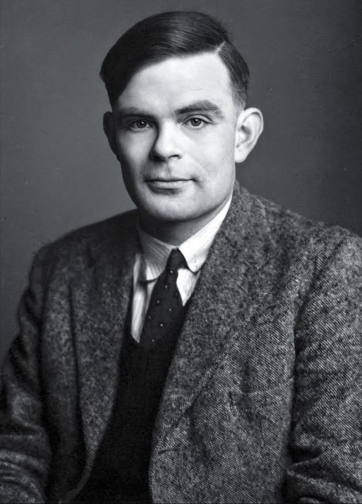

Alan Turing
Alan Turing holds a special place as my favorite scientist, largely because of how deeply his story resonated with me in the biographical masterpiece, The Imitation Game.
While the Germans created the unbreakable Enigma code, it was Turing's solitary genius that built the incredible machine designed to break it. In the film, he heartbreakingly names this massive machine "Christopher," after his childhood best friend and first crush who tragically passed away.
This detail actually holds a very personal connection for me because my own name is Dave Christopher. Hearing my name attached to such a brilliant creation and a deeply moving story makes his legacy resonate with me even more.
As someone who spends a lot of time coding and exploring logic, I look up to Turing. He laid the very foundation for modern computing and artificial intelligence. He was an observer and an outsider—a solitary mind who saw patterns in a chaotic world. His legacy proves that the quietest, most independent minds can change the entire course of human history.